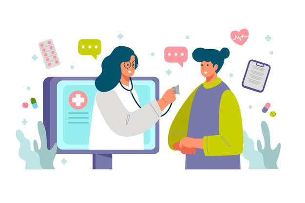

SERVICES PROVIDED
Health services consist of medical professionals, organizations, and ancillary health care workers who provide medical care to those in need. Health services serve patients, families, communities, and populations. They cover emergency, preventative, rehabilitative, long-term, hospital, diagnostic, primary, palliative, and home care. These services are centered around making health care accessible, high quality, and patient-centered. Many different types of care and providers are necessary in order to offer successful health services.
Daily Monitoring

It has become very important nowadays, to keep a daily track of our blood pressure, diabetes, pulse rate and moreover. So, we have brought the facility of monitoring yourself on a daily basis and monitoring your health daily.
Virtual Prescription
We have taken the doctor patient relation into a new way of interaction by facilitating virtual prescription with reminders for your medicines and many more.
Panel of best doctors

We have brought you the best doctors where you can choose your own doctor, get appointments from them and additionally they can even monitor your daily diets , your health 24*7. The patient can selct the doctors acoording to the their qualification and sepcialities.
Storage of all previous Health Record
All the Medical data of the patients will be stored in highly secured servers with the highest available technology for its reliable storage and access control options and features.
Consult Your Doctor via Video Conferencing
You can schedule a call with your very own doctor at the convenience of you both. You and the doctor need to decide and fix timings according to your preferences thereby not disturbing your daily schedules or work life.